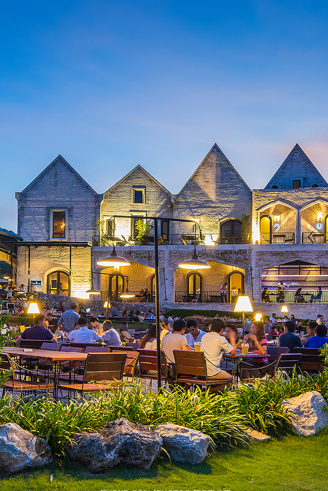

<ons-page class="transparent">
  <ons-toolbar modifier="transparent">
    <div class="right">
      <ons-toolbar-button ng-click="menu.setMainPage('locations.html', {closeMenu: true})" ><ons-icon icon="ion-ios-location" style="color: white; font-size: 28px;"></ons-icon></ons-toolbar-button>
    </div>
    <div class="left">
      <ons-toolbar-button ng-click="menu.toggle()"><ons-icon icon="ion-navicon-round" style="color: white; font-size: 28px;" fixed-width="false"></ons-icon></ons-toolbar-button>
    </div>
  </ons-toolbar>

  <div class="details-content glass">
    <div class="welcome">
      <h2 class="home-title">Pomodoro</h2>
      <p class="subtitle">Steakhouse &amp; Seafood</p>
    </div>
    <div class="blur">
      
    </div>
  </div>

  <svg version="1.1" xmlns="http://www.w3.org/2000/svg">
   <filter id="blur">
     <feGaussianBlur stdDeviation="10" />
     </filter>
  </svg> 


</ons-page>